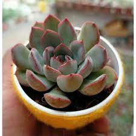

Write a new blog
How to propagate succulents
By John Doe, Jan 10, 2024
Succulents are easy to propagate and grow. You can use different methods to create new plants from your existing ones. Here are some of the most common ways to propagate succulents.
Leaf cuttings: You can take a healthy leaf from your succulent and place it on top of moist soil. Make sure the leaf is not buried or wet. After a few weeks, you should see roots and baby plants emerging from the leaf. You can then separate them and plant them in their own pots.
Stem cuttings: You can cut a stem from your succulent and let it dry for a few days. Then you can insert it into moist soil and water it lightly. The stem should root and grow into a new plant.
Offsets: Some succulents produce small offsets or pups around their base. You can gently remove them and plant them in their own pots. They should root and grow quickly.
Seeds: You can also grow succulents from seeds, but this is a slower and more difficult process. You need to sow the seeds in a well-draining soil mix and keep them moist and warm. The seeds should germinate in a few weeks, but it may take months or years for them to grow into mature plants.